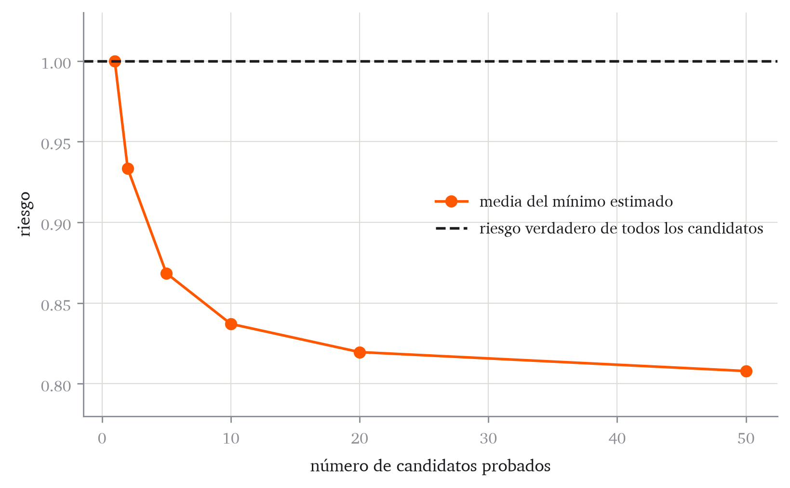
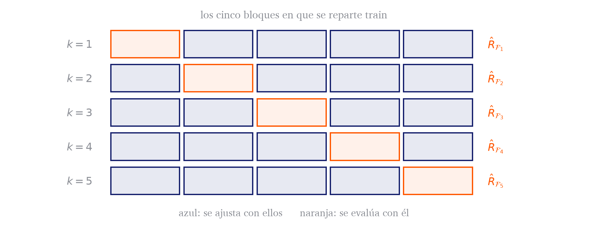
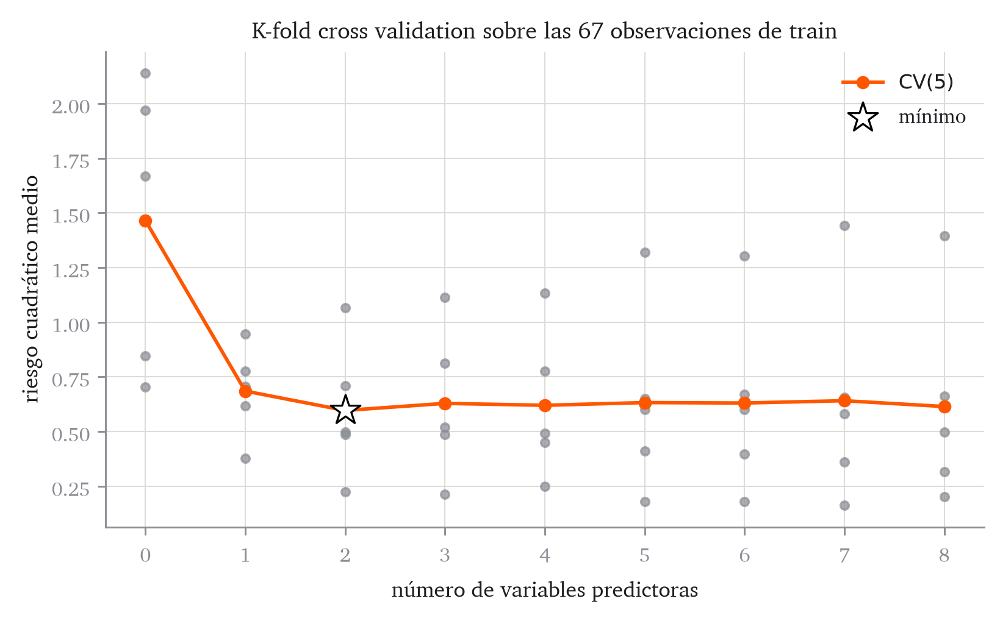
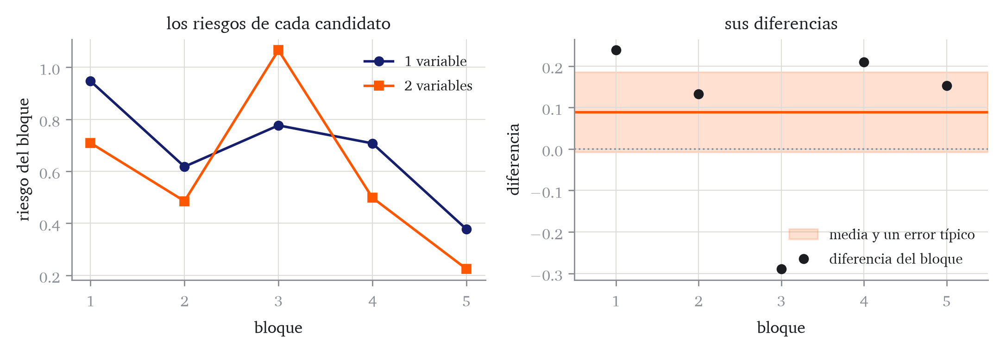

Los capítulos anteriores resolvieron el problema de ajuste. Fijada una clase de hipótesis, construimos el riesgo empírico sobre la muestra disponible y lo minimizamos para obtener \(\hat{\boldsymbol{w}}\). El resultado es el modelo concreto \(f_{\hat{\boldsymbol{w}}}\): una ecuación cuyos parámetros ya están fijados.
Al final del capítulo 3 vimos que el ajuste podía conseguir menos error que los coeficientes reales (que, en general, no son conocidos). Como hemos visto, un error de entrenamiento pequeño no basta para afirmar que el modelo predecirá bien datos nuevos. Predecir bien en la muestra de entrenamiento no implica predecir bien en nuevas muestras, no implica que el modelo generalice. La generalización es la capacidad de un modelo de predecir correctamente datos que no ha visto antes.
Dado un modelo ajustado \(f_{\hat{\boldsymbol{w}}}\), la medida más razonable de rendimiento no es el riesgo de entrenamiento, sino el riesgo verdadero de Definición 2.3,
es decir, la pérdida media sobre observaciones nuevas de la misma población. No conocemos \(P^\star\), así que no podemos calcular esta esperanza: tendremos que aproximarla con datos.
Dos tareas
No poder calcular ese riesgo nos plantea dos preguntas distintas: cómo evaluar una ecuación que ya hemos ajustado y cómo decidir qué variables incluir antes de ajustarla.
Tarea 1: estimar el riesgo de un modelo ya ajustado. Sus parámetros no van a cambiar. Queremos aproximar \(R(\hat{\boldsymbol{w}})\) y saber con qué precisión lo hemos medido.
Tarea 2: elegir cómo vamos a ajustar. En próstata, ¿usamos solo lcavol, añadimos lweight o incluimos las ocho variables? Cada opción es un procedimiento: unas variables y una regla para calcular los coeficientes con los datos que reciba. Queremos comparar \(M\) opciones y elegir una que prediga bien datos nuevos. Después la aplicaremos a todos los datos de entrenamiento para obtener el modelo final, con sus coeficientes ya fijados.
Empezaremos por una referencia sencilla, el modelo nulo. Después resolveremos las dos tareas y veremos otras formas de resumir los errores. El capítulo termina aplicando todo el protocolo a los datos de próstata.
Empezar por una referencia sencilla
La elección natural contra la que comparar el riesgo de un modelo dado es evaluar el riesgo de un modelo que ignora por completo las variables predictoras. Consideremos la familia de funciones constantes, \(\{f_c(\mathbf{x})=c:c\in\mathbb{R}\}\), y el procedimiento que elige el valor de \(c\) minimizando el riesgo empírico.
Definición 4.1 (Modelo nulo) El modelo nulo \(\bar{f}\) es el modelo que predice exactamente el mismo valor para todas las observaciones, sin utilizar \(\mathbf{x}\).
Queda por decidir qué valor. Este valor será el que minimice el riesgo empírico sobre el conjunto de entrenamiento, y dependerá de la función de coste que elijamos.
Lema 4.1 (Bajo coste cuadrático, la mejor constante es la media) Sea \(\hat{R}(c)=\frac{1}{n}\sum_{i=1}^{n}(y_i-c)^2\). Entonces
Se anula solo en \(c=\bar{y}\). Además \(\hat{R}''(c)=2>0\), así que ese punto crítico es el mínimo, y es el único. Sustituyendo \(c=\bar{y}\) se obtiene el valor del enunciado.
Reutilizamos los datos de próstata del capítulo 3. El fichero trae una partición en 67 observaciones de entrenamiento (train) y 30 de evaluación final (test). De momento dejamos estas últimas aparte; enseguida justificaremos por qué.
Usaremos arrays de NumPy, como al introducir scikit-learn en el capítulo anterior. Esta vez X contiene solo las ocho predictoras: LinearRegression() calcula también el intercepto sin que añadamos una columna de unos. es_train es un array de valores verdaderos o falsos; X[es_train] selecciona las filas verdaderas y X[~es_train], las restantes. La respuesta se separa con la misma selección de filas.
Repetimos las operaciones del capítulo 3: LinearRegression() crea el objeto y fit calcula los coeficientes. Después, predict usará esos coeficientes sin volver a ajustar. Definimos también mse para calcular el error cuadrático medio.
In a Jupyter environment, please rerun this cell to show the HTML representation or trust the notebook. On GitHub, the HTML representation is unable to render, please try loading this page with nbviewer.org.
La media se calcula con las 67 observaciones de entrenamiento, no con las 97. Una vez fijada esa constante, \(\bar{f}(\mathbf{x})=\bar y_{\mathcal{D}_{\mathrm{train}}}\) es un modelo concreto.
constante ajustada: 2.4523
modelo nulo, riesgo en train: 1.4370
El modelo nulo predice la constante \(2.4523\) y tiene riesgo \(1.4370\) en train.
Ejercicio 4.1 (La mejor constante con otra pérdida (opcional)) El resultado de Lema 4.1 depende de la pérdida cuadrática.
Escribe el riesgo empírico de una constante \(c\) con la pérdida absoluta, \(\frac{1}{n}\sum_i\left\lvert y_i-c \right\rvert\), y explica por qué no se puede derivar en todo punto.
Argumenta, moviendo \(c\) un poco a la derecha y contando cuántas observaciones quedan a cada lado, que el mínimo se alcanza en la mediana de la muestra.
Para las respuestas \((1,2,9)\), calcula la media y la mediana y comprueba cuál da menor error absoluto medio. No hace falta usar Python.
Tarea 1: estimar el riesgo de un modelo ya ajustado
Comenzamos por la primera tarea. Fijemos un modelo \(f_{\hat{\boldsymbol{w}}}\), obtenido al ajustar sus parámetros con \(\mathcal{D}_{\mathrm{train}}\). Queremos conocer su riesgo verdadero:
En esta esperanza, \(\mathbb{E}_{P^\star}\!\left[ \cdot \right]\), el modelo se mantiene fijo. Lo que cambia es la observación nueva \((X,Y)\): imaginamos muchas observaciones de la población y promediamos las pérdidas que produce esa misma ecuación.
Como no conocemos la población, podríamos intentar sustituir ese promedio por el de las observaciones que ya tenemos, las de \(\mathcal{D}_{\mathrm{train}}\):
El problema es que \(\hat{\boldsymbol{w}}\) se obtuvo minimizando precisamente esa media. Para entender qué falla, necesitamos distinguir dos cosas: equivocarse por azar y equivocarse sistemáticamente en una dirección.
Un estimador es una regla que calcula, a partir de una muestra, una aproximación a una cantidad desconocida. El número que obtenemos al aplicarla es la estimación. Al cambiar la muestra, cambia ese número. Si queremos estimar una cantidad fija \(q\) con un estimador \(Z\), su sesgo es
\[
\mathbb{E}\!\left[ Z \right]-q.
\]
La esperanza representa el promedio que obtendríamos al repetir el muestreo muchas veces. Si el sesgo vale cero, decimos que el estimador es insesgado: acierta en promedio (no en cada muestra!). Al estimar un riesgo, un sesgo negativo es optimista porque hace parecer el error menor de lo que es; uno positivo es pesimista.
Ahora imaginemos otro experimento: recibimos un train nuevo, volvemos a ajustar y repetimos esto muchas veces. Cada muestra produce un modelo distinto. Promediar sobre \(\mathcal{D}_{\mathrm{train}}\), escrito \(\mathbb{E}_{\mathcal{D}_{\mathrm{train}}}\!\left[ \cdot \right]\), significa promediar los resultados de esas repeticiones. En cada una podemos anotar dos números:
\(\hat{R}_{\mathcal{D}_{\mathrm{train}}}(\hat{\boldsymbol{w}})\): el error del modelo en la propia muestra que lo ajustó.
\(R(\hat{\boldsymbol{w}})\): el error que tendría ese mismo modelo, en promedio, sobre datos nuevos de la población. Este segundo número no podemos calcularlo con datos reales, pero sí definirlo.
La diferencia entre \(\mathbb{E}_{\mathcal{D}_{\mathrm{train}}}\!\left[ \hat{R}_{\mathcal{D}_{\mathrm{train}}}(\hat{\boldsymbol{w}}) \right]\) y \(\mathbb{E}_{\mathcal{D}_{\mathrm{train}}}\!\left[ R(\hat{\boldsymbol{w}}) \right]\) no está en los modelos: son los mismos. Está en dónde los evaluamos. El resultado siguiente dice que la primera media no supera a la segunda: evaluar donde hemos ajustado favorece al modelo.
Proposición 4.1 (El riesgo en train es optimista en media) Sean las observaciones de \(\mathcal{D}_{\mathrm{train}}\) extracciones independientes de \(P^\star\). Sea \(\hat{\boldsymbol{w}}\) el minimizador del riesgo empírico sobre \(\mathcal{D}_{\mathrm{train}}\) y sea \(\boldsymbol{w}^\star\) un minimizador del riesgo verdadero \(R(\boldsymbol{w})=\mathbb{E}_{P^\star}\!\left[ \ell(Y,f_{\boldsymbol{w}}(X)) \right]\) de Ecuación 2.3. Con las dos esperanzas tomadas sobre muestras de entrenamiento de tamaño \(n_{\mathrm{train}}\),
Demostración. Para la primera desigualdad, \(\hat{\boldsymbol{w}}\) minimiza \(\hat{R}_{\mathcal{D}_{\mathrm{train}}}\), luego \(\hat{R}_{\mathcal{D}_{\mathrm{train}}}(\hat{\boldsymbol{w}})\leq\hat{R}_{\mathcal{D}_{\mathrm{train}}}(\boldsymbol{w}^\star)\) sea cual sea la muestra que salga. Tomando esperanzas, y usando que \(\boldsymbol{w}^\star\) está fijado sin mirar la muestra, de modo que por Lema 1 la esperanza de cada pérdida vale \(R(\boldsymbol{w}^\star)\),
Para la segunda, \(R(\boldsymbol{w}^\star)\leq R(\boldsymbol{w})\) para todo \(\boldsymbol{w}\) por definición de \(\boldsymbol{w}^\star\), en particular para \(\hat{\boldsymbol{w}}\), y las desigualdades se conservan al tomar esperanzas.
La conclusión se lee de izquierda a derecha: en promedio, medir en train da un error no mayor que el riesgo verdadero del modelo ajustado. No afirma que esto ocurra en todas las muestras. Para evitar ese optimismo necesitamos observaciones ajenas al ajuste. Llamaremos \(\mathcal{D}_{\mathrm{test}}\) a ese conjunto, con \(n_{\mathrm{test}}\) observaciones.
Teorema 4.1 (El error de test es insesgado para un modelo fijo) Sea \(\hat{\boldsymbol{w}}\) un vector de parámetros fijado sin usar la muestra \(\mathcal{D}_{\mathrm{test}}\), y sean las observaciones de \(\mathcal{D}_{\mathrm{test}}\) extracciones independientes de \(P^\star\). Entonces
Fijado \(\boldsymbol{w}\), la función \(g(\mathbf{x},y)=\ell\bigl(y,f_{\boldsymbol{w}}(\mathbf{x})\bigr)\) está elegida sin mirar \(\mathcal{D}_{\mathrm{test}}\), y cada observación \((\mathbf{x}_i,y_i)\) de ese conjunto es una extracción de \(P^\star\). Por Lema 1, la esperanza de cada sumando es la integral de \(g\) contra \(P^\star\), es decir \(\mathbb{E}_{P^\star}\!\left[ \ell\bigl(Y,f_{\boldsymbol{w}}(X)\bigr) \right]=R(\boldsymbol{w})\), que es la definición de Ecuación 2.3 y es la misma para todos los sumandos. La esperanza es lineal, así que la esperanza de la media es la media de las esperanzas:
Veámoslo con una simulación en la que sí conocemos la población. Generamos respuestas \(Y=2+\varepsilon\), con \(\varepsilon\sim\mathcal{N}(0,1)\), y ajustamos una constante \(c=\bar y_{\mathcal{D}_{\mathrm{train}}}\). Como el ruido tiene media cero y varianza uno, el riesgo verdadero de esa constante es
En cada repetición generamos diez respuestas de train, ajustamos \(c\) y medimos su error tanto en esas diez respuestas como en otras diez nuevas de test. Restamos a ambas mediciones el riesgo verdadero del modelo de esa repetición: un resultado negativo significa que hemos subestimado el riesgo.
Figura 4.1: Medir en train subestima el riesgo en promedio; medir en test acierta en promedio. Ambas mediciones varían de una muestra a otra: ninguna tiene por qué acertar en una repetición concreta. El código de la simulación es de consulta.
En suma, si conociéramos \(P^\star\), dado un modelo ajustado con parámetros \(\hat{\boldsymbol{w}}\), podríamos calcular \(R(\hat{\boldsymbol{w}})\) integrando directamente. Como \(P^\star\) es desconocida, la única aproximación disponible es otra media empírica; Proposición 4.1 obliga a calcularla sobre observaciones que no hayan intervenido en el ajuste. Esto motiva la primera partición.
Definición 4.2 (Entrenamiento y test) Para poder ajustar un modelo predictivo y estimar su riesgo de generalización, la muestra \(\mathcal{D}\) debe repartirse al azar en dos partes disjuntas:
\(\mathcal{D}_{\mathrm{train}}\), de tamaño \(n_{\mathrm{train}}\), con la que el procedimiento fija los parámetros del modelo;
\(\mathcal{D}_{\mathrm{test}}\), de tamaño \(n_{\mathrm{test}}\), con la que se mide el riesgo de ese modelo, sin haberla consultado antes.
Escribimos \(\hat{R}_{\mathcal{D}_{\mathrm{test}}}(\boldsymbol{w})\) para el riesgo empírico calculado sobre \(\mathcal{D}_{\mathrm{test}}\), y análogamente para \(\mathcal{D}_{\mathrm{train}}\).
Suponemos que las observaciones originales son independientes y proceden de la misma \(P^\star\). Repartirlas sin mirar sus valores conserva esas condiciones; no garantiza que las dos muestras concretas sean idénticas ni igual de fáciles.
Si el fichero no trajera una partición, podríamos obtenerla con train_test_split. La llamada siguiente queda como referencia; no sustituye el reparto que estamos usando.
from sklearn.model_selection import train_test_splitX_train, X_test, y_train, y_test = train_test_split( X, y, test_size=30, random_state=42)
La función separa las mismas filas de X e y. test_size=30 reserva 30 observaciones (con 0.3 reservaría el 30 %); random_state=42 permite repetir el mismo reparto. No se prueban semillas hasta encontrar una con buen test.
Una vez fijado el modelo, el teorema dice que el test acierta en promedio. Pero una muestra pequeña todavía puede dar una cifra lejos de su riesgo verdadero. Falta medir esa precisión.
Con qué precisión se mide
Aunque el modelo no cambie, otro test daría otro error medio. Toda estimación lleva incertidumbre. El sesgo describe si se desvía sistemáticamente; la varianza, cuánto cambia entre muestras. Usar test independiente elimina el sesgo, no la variabilidad.
Para informar de esa precisión basta con tres operaciones:
Calcular una pérdida por observación (del conjunto de test) y promediarlas: esa media estima el riesgo.
Calcular la desviación típica muestral \(s\) de las pérdidas.
Dividir \(s\) por \(\sqrt{n_{\mathrm{test}}}\). El resultado estima el error típico de la media, es decir, cuánto fluctuaría nuestra estimación entre muestras de test.
ddof=1 usa el divisor \(n_{\mathrm{test}}-1\) de la desviación típica muestral. No confundamos \(s\), que describe la dispersión de las pérdidas individuales, con ee, que describe la precisión de su media. Por ejemplo, con 100 pérdidas, media \(0.5\) y \(s=1\), informamos de \(0.5\pm0.1\) (media \(\pm\) un error típico), no de \(0.5\pm1\).
Cómo leer el margen. Por el teorema central del límite, si las pérdidas son independientes, tienen varianza finita y el test es suficientemente grande, la media tiene una distribución aproximadamente normal. Al repetir la evaluación con tests nuevos, los intervalos media \(\pm\) un error típico contendrían el riesgo verdadero aproximadamente el 68 % de las veces; con dos errores típicos, aproximadamente el 95 %.
No es una garantía para nuestro intervalo concreto. Con pocas observaciones o pérdidas muy asimétricas, la aproximación puede ser mala. La demostración del teorema central del límite queda fuera del curso: aquí solo usaremos esta interpretación aproximada.
Como el error típico es inversamente proporcional a \(\sqrt{n_{\mathrm{test}}}\), para reducirlo a la mitad necesitamos aproximadamente cuatro veces más observaciones de test. Eso deja menos datos para ajustar: no hay un porcentaje óptimo para todos los problemas.
NotaDemostración no exigible
Proposición 4.2 (Precisión de la estimación de test) En las condiciones de Teorema 4.1, con pérdidas de varianza finita,
El subíndice importa: a la izquierda la varianza es sobre las muestras de test de tamaño \(n_{\mathrm{test}}\), y a la derecha sobre una sola observación nueva.
Demostración. Las \(n_{\mathrm{test}}\) pérdidas son independientes y tienen todas la misma varianza, que llamamos \(v\). La varianza de su suma es \(n_{\mathrm{test}}\,v\), y multiplicar por \(1/n_{\mathrm{test}}\) multiplica la varianza por \(1/n_{\mathrm{test}}^2\), de modo que queda \(v/n_{\mathrm{test}}\).
Ejercicio 4.2 (Cuánto test hace falta) Un modelo ya fijado se evalúa con 25 observaciones independientes de la misma población. La media de las pérdidas es 3 y su desviación típica muestral es \(s=2\).
Calcula el error típico estimado e informa del riesgo como media \(\pm\) error típico.
Suponiendo que la dispersión de las pérdidas se mantiene, ¿cuántas observaciones necesitaríamos para reducir el error típico a la mitad?
Explica por qué “insesgado” no significa “exacto” y por qué \(s\) y el error típico son cantidades distintas.
Escribe el intervalo media \(\pm\) dos errores típicos. Si la aproximación normal es adecuada, ¿qué significa la cobertura aproximada del 95 %? ¿Garantiza que este intervalo concreto contenga el riesgo verdadero?
Tarea 2: elegir el mejor procedimiento entre \(M\) alternativas
Ya sabemos cómo evaluar un modelo fijo. No obstante, en muchas ocasiones, necesitamos escoger entre modelos. Por ejemplo ¿usamos una variable, dos, todas? Cada elección define un procedimiento distinto. Podríamos ajustar las \(M\) alternativas en train, medir el rendimiento de los correspondientes modelos en test y quedarnos con el de menor error. El problema es que cada una de estas mediciones de rendimiento tiene azar. El menor valor puede señalar un buen candidato o uno al que esa muestra de test le ha resultado favorable.
Veamos un ejemplo. Fijamos dos modelos, A y B, ya ajustados con train. Al evaluarlos en el mismo test obtenemos dos errores medios, uno por modelo: cada uno estima el riesgo verdadero del modelo correspondiente. Si repitiéramos la evaluación con otro test, sin reajustar los modelos, esos dos errores podrían cambiar.
Supongamos que ambos riesgos verdaderos valen 1. Para simplificar las cuentas, imaginemos que, al cambiar test, solo pueden darse estas cuatro parejas de errores, todas con la misma probabilidad:
Error en test de A
Error en test de B
Mínimo
0.8
0.8
0.8
0.8
1.2
0.8
1.2
0.8
0.8
1.2
1.2
1.2
Si miramos solo A, su error vale \(0.8\) la mitad de las veces y \(1.2\) la otra mitad: promedia 1, su riesgo verdadero. Lo mismo ocurre con B. Pero, si en cada evaluación elegimos el modelo de menor error e informamos de ese mínimo, el promedio es \((0.8+0.8+0.8+1.2)/4=0.9\). El riesgo verdadero del elegido sigue siendo 1. Ese es el sesgo de selección: escoger la medición más favorable hace parecer mejor al modelo, aunque ninguno haya mejorado. La prueba siguiente generaliza la idea; no exige que las cuatro situaciones sean igual de probables ni que las estimaciones sean independientes.
Proposición 4.3 (El mínimo de varias estimaciones insesgadas es optimista) Sean \(Z_1,\ldots,Z_M\) estimaciones y \(q_1,\ldots,q_M\) las cantidades que estiman, cada una sin sesgo: \(\mathbb{E}\!\left[ Z_k \right]=q_k\) para todo \(k\). Entonces
Demostración. Para cada \(j\) se cumple \(\min_k Z_k\leq Z_j\), porque el mínimo de un conjunto es menor o igual que cualquiera de sus elementos. Tomando esperanzas, que conservan las desigualdades, \(\mathbb{E}\!\left[ \min_k Z_k \right]\leq\mathbb{E}\!\left[ Z_j \right]=q_j\). Como esto vale para todo \(j\), vale también para el \(j\) que hace \(q_j\) más pequeño.
En este caso, \(Z_k\) es el error de test del modelo \(k\) y \(q_k\) su riesgo verdadero. El mínimo observado es optimista en promedio, no necesariamente en cada muestra. Lo que está sucediendo es que al usar el conjunto de test para elegir el mejor modelo, este ya depende del conjunto de test y por tanto, deja de cumplirse la condición de Teorema 4.1. Necesitamos unos datos para elegir entre procedimientos y otros, no consultados, para informar del resultado final.
Código
rng = np.random.default_rng(42)# Simulamos estimaciones, todas con media 1; no son ajustes de próstata.estimaciones = rng.uniform(0.8, 1.2, size=(5000, 50))Ms = [1, 2, 5, 10, 20, 50]minimos_medios = [ estimaciones[:, :M].min(axis=1).mean() for M in Ms]fig, ax = plt.subplots(figsize=(6.4, 4.0))ax.plot(Ms, minimos_medios, marker="o", color=NARANJA, label="media del mínimo estimado")ax.axhline(1, color=TINTA, linestyle="--", label="riesgo verdadero de todos los candidatos")ax.set(xlabel="número de candidatos probados", ylabel="riesgo", ylim=(0.78, 1.03))ax.legend()plt.tight_layout()

Figura 4.2: Promedio de 5000 repeticiones. Todos los candidatos tienen riesgo 1 y cada estimación individual acierta en promedio. Probar más candidatos reduce el mínimo que informamos, sin mejorar ninguno de ellos. El código de esta simulación es de consulta.
Validación simple
Esta es la opción más natural. Reservamos el conjunto de test para el final. Tampoco podemos elegir entre procedimientos usando el error de entrenamiento. Esto es fácil de entender: por ejemplo, añadir variables no puede empeorar el mínimo en train, porque siempre podríamos poner a cero sus coeficientes. Eligiendo el procedimiento con menor error de train, el riesgo del modelo elegido es optimista en promedio.
La solución es separar temporalmente train en dos partes: \(\mathcal{D}_{\mathrm{ajuste}}\) y \(\mathcal{D}_{\mathrm{val}}\). Con \(\mathcal{D}_{\mathrm{ajuste}}\) ajustamos cada candidato; con \(\mathcal{D}_{\mathrm{val}}\) evaluamos los modelos obtenidos y elegimos el mejor procedimiento. Medimos el riesgo del modelo elegido en \(\mathcal{D}_{\mathrm{test}}\), que no ha intervenido en ninguna decisión. Este procedimiento se conoce como validación simple.
Definición 4.3 (Entrenamiento, validación y test) Primero se separa \(\mathcal{D}_{\mathrm{test}}\) al azar y se denomina \(\mathcal{D}_{\mathrm{train}}\) al resto de los datos. Una validación simple parte a su vez \(\mathcal{D}_{\mathrm{train}}=\mathcal{D}_{\mathrm{ajuste}}\cup\mathcal{D}_{\mathrm{val}}\), con lo que quedan tres subconjuntos disjuntos y tres papeles distintos:
\(\mathcal{D}_{\mathrm{ajuste}}\), con \(n_{\mathrm{train}}-n_{\mathrm{val}}\) observaciones, fija los parámetros de cada modelo provisional, y por eso el riesgo medido sobre él es optimista según Proposición 4.1;
\(\mathcal{D}_{\mathrm{val}}\), con \(n_{\mathrm{val}}\) observaciones, compara los procedimientos candidatos y queda consumido por esa elección, de modo que el riesgo del ganador medido en él es optimista según Proposición 4.3;
\(\mathcal{D}_{\mathrm{test}}\), con \(n_{\mathrm{test}}\) observaciones, mide una sola vez el modelo final y no interviene en ninguna decisión, que es lo que hace insesgada esa medición por Teorema 4.1.
Figura 4.3: La validación simple dentro de \(\mathcal{D}_{\mathrm{train}}\). Los dos primeros bloques constituyen los datos de desarrollo; el tercero es \(\mathcal{D}_{\mathrm{test}}\) y permanece aislado hasta el final.
Las proporciones del dibujo son ilustrativas. Vamos a aplicar la validación simple a los datos de próstata. Como en el capítulo 3, queremos predecir lpsa; ahora debemos decidir qué variables predictoras utilizar. Compararemos nueve procedimientos: el nulo y ocho ajustes lineales que incorporan las variables una a una.
Para compararlos, reservamos el 20 % de train para validar. De las 67 observaciones, 53 ajustarán y 14 validarán; las 30 de test siguen aparte. La función de separación es la misma que vimos antes, pero ahora recibe solo train.
El número \(m\) indica cuántas variables usa cada candidato. Con \(m=0\) ajustamos una constante, la media de y_ajuste. Con \(m=1\) ajustamos una recta que usa lcavol; con \(m=2\) añadimos lweight, y así hasta \(m=8\), que usa todas las predictoras. Todos los ajustes minimizan el error cuadrático e incluyen un intercepto: lo que cambia entre procedimientos es qué variables utilizan. Fijamos la lista de variables antes de mirar los errores, siguiendo el orden de predictoras. No buscamos entre todos los subconjuntos posibles. Cada procedimiento recibe las mismas 53 observaciones de ajuste; los modelos obtenidos se comparan sobre las mismas 14 de validación.
En NumPy, X[:, :m] toma todas las filas y las primeras \(m\) columnas. La función siguiente ajusta con una parte y evalúa con la otra:
La constante se aprende solo con los datos de ajuste, no con todo train.
2
fit calcula los coeficientes, incluido el intercepto, usando las \(m\) predictoras.
3
predict conserva esos coeficientes y predice las filas de validación. Solo después usamos y_val para medir el error.
Evaluamos los nueve candidatos sobre la misma partición y buscamos el menor error. np.argmin devuelve la posición del mínimo; como empezamos en \(m=0\), coincide con el número de variables.
En este reparto se eligen cinco variables. Nótese que el mínimo sirve para elegir, pero no para informar del rendimiento final del modelo, pues el mínimo está afectado por el sesgo de selección. Lo que tendríamos que hacer sería entrenar el procedimiento elegido con todo train y medir el rendimiento el modelo resultante una sola vez en test. Volver a calcular los coeficientes con todo train se llama reajustar; recupera los datos que habíamos reservado para validar.
Antes de hacerlo, veremos una alternativa a la validación simple que depende menos de una única partición. Usaremos esa alternativa, la validación cruzada, para cerrar el ejemplo del capítulo.
NotaAmpliación no exigible: qué riesgo aproxima la validación
Al reajustar obtenemos otro modelo. Por eso, al elegir un procedimiento nos interesa cómo funciona con distintas muestras, no solo un ajuste concreto. Su riesgo esperado es el promedio de los riesgos verdaderos de los modelos que produciría al recibir muestras nuevas, todas del mismo tamaño.
Definición 4.4 (Riesgo esperado de un procedimiento) Sea \(\hat{f}^{(m)}_{\mathcal{D}}\) el modelo concreto que produce el procedimiento \(m\) al recibir una muestra \(\mathcal{D}\) de tamaño \(N\). El riesgo esperado del procedimiento\(m\) a tamaño \(N\) es
donde \(R(\hat{f})=\mathbb{E}_{P^\star}\!\left[ \ell(Y,\hat{f}(X)) \right]\) extiende a funciones el riesgo verdadero de Definición 2.3.
Lo ideal sería elegir el menor \(\bar{R}_{n_{\mathrm{train}}}\), pero no conocemos \(P^\star\) ni disponemos de muestras nuevas ilimitadas. La validación lo aproxima con nuestros datos. El ejercicio siguiente precisa qué estima antes de seleccionar: el riesgo esperado a tamaño \(n_{\mathrm{train}}-n_{\mathrm{val}}\), no a tamaño completo.
Ejercicio 4.3 (La validación simple es insesgada (opcional)) Sea \(\mathcal{D}_{\mathrm{train}}\) una muestra de \(n_{\mathrm{train}}\) extracciones independientes de \(P^\star\), repartida al azar y sin mirar los datos en \(\mathcal{D}_{\mathrm{ajuste}}\), con \(n_{\mathrm{train}}-n_{\mathrm{val}}\) observaciones, y \(\mathcal{D}_{\mathrm{val}}\), con \(n_{\mathrm{val}}\). El procedimiento \(m\) recibe \(\mathcal{D}_{\mathrm{ajuste}}\) y devuelve \(\hat{f}^{(m)}_{\mathcal{D}_{\mathrm{ajuste}}}\), que se mide sobre \(\mathcal{D}_{\mathrm{val}}\).
Razona que, fijado \(\mathcal{D}_{\mathrm{ajuste}}\), el modelo es un objeto fijo y las observaciones de \(\mathcal{D}_{\mathrm{val}}\) le son ajenas, de modo que Teorema 4.1 se aplica tomando \(\mathcal{D}_{\mathrm{val}}\) como muestra de evaluación, y escribe la esperanza condicional que resulta.
Toma esperanzas sobre \(\mathcal{D}_{\mathrm{ajuste}}\) y concluye, con Definición 4.4, que \(\mathbb{E}_{\mathcal{D}_{\mathrm{train}}}\!\left[ \hat{R}_{\mathcal{D}_{\mathrm{val}}}(\hat{f}^{(m)}_{\mathcal{D}_{\mathrm{ajuste}}}) \right]
=\bar{R}_{n_{\mathrm{train}}-n_{\mathrm{val}}}^{(m)}\).
Di qué paso deja de valer si el reparto se hace mirando los datos, por ejemplo enviando a \(\mathcal{D}_{\mathrm{val}}\) las observaciones peor predichas por un ajuste previo.
K-fold cross validation
La validación simple tiene dos limitaciones:
Ajusta con menos datos. Si el procedimiento mejora al recibir más observaciones, evaluarlo tras ajustar con solo 53 será pesimista respecto a ajustarlo con las 67.
Evalúa con pocos datos. La comparación depende de las 14 observaciones que hayan caído en validación. Otro reparto puede cambiar mucho los resultados.
No podemos usar las mismas filas para ajustar y evaluar, pero sí cambiar sus papeles en varias vueltas. Eso hace la validación cruzada de \(K\) bloques (K-fold cross validation).
Definición 4.5 (K-fold cross validation) Se particiona el conjunto de entrenamiento \(\mathcal{D}_{\mathrm{train}}\) al azar en \(K\) bloques disjuntos \(\mathcal{F}_{1},\ldots,\mathcal{F}_{K}\) de tamaño aproximadamente igual. Para cada bloque \(k \in \{1,\ldots,K\}\):
Se aplica el procedimiento a todos los datos de train excepto los de \(\mathcal{F}_{k}\).
Se evalúa el modelo resultante sobre el bloque retenido \(\mathcal{F}_{k}\) para obtener su riesgo, denotado como \(\hat{R}_{\mathcal{F}_{k}}\).
Una vez recorridos los \(K\) bloques, promediamos sus riesgos:
Con \(K=5\), cada vuelta ajusta con cuatro bloques y evalúa con el quinto. Cada observación evalúa una vez, siempre un modelo que no la ha usado para ajustar; además, participa en los otros cuatro ajustes. Seguimos suponiendo observaciones independientes de la misma población y un reparto al azar.
Código
K =5fig, ax = plt.subplots(figsize=(7.2, 2.9))for fila inrange(K):for bloque inrange(K): es_val = bloque == fila ax.add_patch(plt.Rectangle( (bloque, -fila), 0.94, 0.8, facecolor="#fff1ea"if es_val else"#e7e9f2", edgecolor=NARANJA if es_val else AZUL, lw=1.1, )) ax.text(-0.25, -fila +0.4, f"$k={fila +1}$", ha="right", va="center", fontsize=9, color=GRIS) ax.text(K +0.15, -fila +0.4,r"$\hat R_{\mathcal{F}_%d}$"% (fila +1), ha="left", va="center", fontsize=9, color=NARANJA)ax.text(K /2, 1.15, "los cinco bloques en que se reparte train", ha="center", fontsize=9, color=GRIS)ax.text(2.5, -K +0.65,"azul: se ajusta con ellos naranja: se evalúa con él", ha="center", va="top", fontsize=8.5, color=GRIS)ax.set(xlim=(-1.4, K +1.5), ylim=(-K +0.15, 1.45))ax.set_axis_off()plt.tight_layout()

Figura 4.4: K-fold cross validation con \(K=5\). Cada fila aplica el procedimiento a cuatro bloques y evalúa el modelo resultante con el que queda. La estimación es la media de las cinco evaluaciones.
NotaAmpliación no exigible: qué riesgo aproxima CV
CV promedia evaluaciones de \(K\) modelos distintos. Con bloques iguales, todos se ajustan con \(n_{\mathrm{train}}(K-1)/K\) observaciones: aproxima el riesgo esperado del procedimiento a ese tamaño, no el riesgo del modelo final. Lo justificamos como en Ejercicio 4.3.
Ejercicio 4.4 (Qué estima exactamente la validación cruzada (opcional)) Con las hipótesis de Ejercicio 4.3, reparte \(\mathcal{D}_{\mathrm{train}}\) al azar en \(K\) bloques del mismo tamaño y llama \(n_a=n_{\mathrm{train}}(K-1)/K\) al número de observaciones de cada conjunto de ajuste.
Aplica el apartado b de Ejercicio 4.3 a un bloque cualquiera \(\mathcal{F}_{k}\) y deduce que \(\mathbb{E}_{\mathcal{D}_{\mathrm{train}}}\!\left[ \hat{R}_{\mathcal{F}_{k}} \right]=\bar{R}_{n_a}^{(m)}\) para todo \(k\).
Concluye que \(\mathbb{E}_{\mathcal{D}_{\mathrm{train}}}\!\left[ \mathrm{CV} \right]=\bar{R}_{n_a}^{(m)}\) y di qué propiedad de la esperanza usas. Observa que no hace falta que los \(K\) riesgos sean independientes.
Con \(n_{\mathrm{train}}=67\) y \(K=5\) los bloques no pueden ser iguales, y los ajustes usan 53 o 54 observaciones. Di de qué es media entonces \(\mathbb{E}_{\mathcal{D}_{\mathrm{train}}}\!\left[ \mathrm{CV} \right]\).
Explica por qué nada de esto dice que \(\mathrm{CV}\) sea insesgada para \(\bar{R}_{n_{\mathrm{train}}}\), ni para el riesgo verdadero del modelo concreto que se acabará entregando.
Así usamos todo train para evaluar, en lugar de depender de un único subconjunto pequeño. Esto suele estabilizar la comparación, aunque no garantiza menor variabilidad en todos los problemas. Con cinco bloques seguimos ajustando con aproximadamente el 80 % de train; con diez usaríamos el 90 %, más cerca del tamaño final. Acercarnos a ese tamaño reduce el posible pesimismo por ajustar con menos datos, si el procedimiento mejora con ellos. Usaremos cinco: aumentar \(K\) cuesta más ajustes y no asegura más precisión.
La implementación reutiliza riesgo_validacion; solo cambia quién organiza las filas. De ello se ocupa KFold. Este objeto no ajusta ni evalúa:
n_splits=5 pide cinco bloques.
shuffle=True mezcla las filas antes de repartirlas.
random_state=42 permite repetir el mismo reparto para todos los candidatos.
split(X_train) proporciona los índices de ajuste y validación de cada vuelta. X_train[indices_ajuste] selecciona esas filas; hacemos lo mismo con y_train.
from sklearn.model_selection import KFolddef cv_riesgo(m, n_bloques=5, semilla=42): particion = KFold(n_splits=n_bloques, shuffle=True, random_state=semilla) riesgos = []for indices_ajuste, indices_val in particion.split(X_train): riesgo = riesgo_validacion( m, X_train[indices_ajuste], y_train[indices_ajuste], X_train[indices_val], y_train[indices_val],1 ) riesgos.append(riesgo)return np.array(riesgos)
1
La función vuelve a ajustar desde cero y mide en las filas retenidas. Guardamos los cinco riesgos; np.array convierte la lista en un array para poder promediarlos o restar después los resultados de dos candidatos.
Recorremos los nueve candidatos, del nulo al de ocho variables. La lista bloques_de[m] guardará los cinco riesgos del candidato \(m\). np.argmin devuelve la posición del menor valor; como los candidatos empiezan en cero, esa posición coincide aquí con \(m\).
bloques_de = []for m inrange(len(predictoras) +1): bloques_de.append(cv_riesgo(m))medias_cv = np.array([bloques.mean() for bloques in bloques_de])m_campeon =int(np.argmin(medias_cv))print(" m CV(5) riesgos de los cinco bloques")for m, bloques inenumerate(bloques_de):print(f"{m:2d}{medias_cv[m]:.4f}{np.round(bloques, 3)}")print(f"\ncandidato de menor CV: {m_campeon}")
El mínimo de CV usa dos variables, con error \(0.5966\), frente a las cinco que elegía la validación simple. El nulo da \(1.4655\) y ocho variables dan \(0.6144\). Las diferencias entre algunas alternativas son pequeñas: antes de elegir, conviene tener en cuenta que tampoco estas medias son exactas.
Código
fig, ax = plt.subplots(figsize=(6.4, 4.0))ms = np.arange(len(bloques_de))for m, bloques inenumerate(bloques_de): ax.scatter([m] *len(bloques), bloques, color=GRIS, s=14, alpha=0.7, zorder=2)ax.plot(ms, medias_cv, marker="o", ms=5, color=NARANJA, lw=1.6, zorder=3, label=r"$\mathrm{CV}(5)$")ax.scatter([m_campeon], [medias_cv[m_campeon]], marker="*", s=200, facecolor="white", edgecolor="black", lw=0.9, zorder=4, label="mínimo")ax.set(xlabel="número de variables predictoras", ylabel="riesgo cuadrático medio", title="K-fold cross validation sobre las 67 observaciones de train")ax.legend()plt.tight_layout()

Figura 4.5: La estimación por K-fold cross validation frente al número de variables. Los puntos grises son los cinco riesgos que se promedian en cada caso. Su dispersión es grande: en el mínimo van de \(0.22\) a \(1.07\), de modo que el número promediado lleva bastante incertidumbre.
Ejercicio 4.5 (Cuántos bloques) Tenemos 60 observaciones de train y cuatro procedimientos candidatos.
Con \(K=5\), ¿cuántas observaciones evalúan y cuántas ajustan en cada vuelta? ¿Cuántos ajustes hacen falta para comparar los cuatro procedimientos?
Repite las cuentas con \(K=10\). ¿Con cuál de los dos valores usa cada ajuste una muestra más parecida a train completo?
Con \(K=60\), cada bloque contiene una observación. Este caso se llama leave-one-out. ¿Cuántos ajustes requiere? Explica por qué usar más bloques no garantiza una comparación más precisa.
Elegir entre candidatos: regla de un error típico
Ya tenemos los resultados de CV. El menor error medio, \(0.5966\), corresponde a dos variables: lcavol y lweight. Usando solo lcavol obtenemos \(0.6853\). Añadir la segunda variable mejora el error estimado en \(0.0887\), pero esa mejora puede depender del reparto en bloques. Nos falta decidir si justifica usar una variable más.
Usaremos una regla práctica: tomar como referencia el candidato de menor CV, pero preferir uno más sencillo si su desventaja no supera un error típico de la diferencia. Es una forma de evitar añadir variables por mejoras pequeñas respecto a la incertidumbre de la comparación. Aquí, más sencillo significa usar menos variables.
Para aplicarla necesitamos medir esa desventaja y su incertidumbre. Restamos los errores bloque a bloque: el de una variable en el primer bloque menos el de dos variables en ese mismo bloque, y así con los cinco. De esta forma comparamos sobre los mismos pacientes; si un bloque resulta difícil para ambos, parte de esa dificultad común se elimina al restar. A esto lo llamamos comparación emparejada.
Definición 4.6 (Diferencia emparejada) Para comparar dos procedimientos \(A\) y \(B\) evaluados sobre los mismos \(K\) bloques, calculamos las diferencias y su media:
Una diferencia media positiva indica cuánto más error tiene \(A\); una negativa favorece a \(A\). Calculamos la desviación típica muestral \(s_d\) de las diferencias y usamos \(\text{EE}_{\text{dif}}=s_d/\sqrt K\) como escala aproximada de incertidumbre. No usamos la dispersión de los errores de \(A\) o de \(B\) por separado, sino la de sus restas.
En nuestro ejemplo, bloques_de[1] - bloques_de[2] resta los cinco errores de una variable menos los de dos, posición a posición. La media de esas restas vale \(0.0887\); su desviación típica dividida por \(\sqrt{5}\) da \(0.0964\). Como \(0.0887\leq0.0964\), la regla permite quedarnos con una variable. Antes de elegirla, comprobaremos también el candidato aún más sencillo: el nulo.
Código
m_sencillo =1a, b = bloques_de[m_sencillo], bloques_de[m_campeon]d = a - b # candidato sencillo menos campeónee = d.std(ddof=1) / np.sqrt(len(d))posicion = np.arange(1, len(d) +1)fig, ax = plt.subplots(1, 2, figsize=(8.4, 3.0))ax[0].plot(posicion, a, marker="o", ms=5, color=AZUL, label=f"{m_sencillo} variable")ax[0].plot(posicion, b, marker="s", ms=5, color=NARANJA, label=f"{m_campeon} variables")ax[0].set(xlabel="bloque", ylabel="riesgo del bloque", title="los riesgos de cada candidato")ax[0].set_xticks(posicion)ax[0].legend(fontsize=8.5)ax[1].fill_between([0.5, len(d) +0.5], d.mean() - ee, d.mean() + ee, color=NARANJA, alpha=0.18, label="media y un error típico")ax[1].axhline(d.mean(), color=NARANJA, lw=1.5)ax[1].axhline(0.0, color=GRIS, lw=1, linestyle=":")ax[1].plot(posicion, d, marker="o", ms=5, ls="none", color=TINTA, label="diferencia del bloque")ax[1].set(xlabel="bloque", ylabel="diferencia", xlim=(0.5, len(d) +0.5), title="sus diferencias")ax[1].set_xticks(posicion)ax[1].legend(fontsize=8.5, loc="lower right")plt.tight_layout()

Figura 4.6: Una y dos variables sobre los mismos bloques. A la derecha, las diferencias: el margen de un error típico alrededor de su media alcanza el cero.
Aplicar la regla en próstata
Esta es la versión emparejada de la regla de un error típico. La aplicamos ordenando los candidatos por número de variables, de menor a mayor. La referencia no cambia durante la comparación: siempre es el candidato que obtuvo la menor CV.
Definición 4.7 (Regla de un error típico)
Localizar el campeón, el candidato de menor CV.
Empezando por el más sencillo, restar sus errores menos los del campeón bloque a bloque. Calcular la media \(\bar d\) y el error típico aproximado \(\text{EE}_{\text{dif}}\) de esas diferencias.
Si \(\bar d\leq\text{EE}_{\text{dif}}\), elegir ese candidato y parar. Si no, pasar al siguiente de la lista. Si ninguno de los más sencillos que el campeón cumple la condición, elegir al campeón.
El campeón usa dos variables, de modo que solo hay que examinar el nulo y el de una:
Candidato
Desventaja frente a dos variables
Error típico de la diferencia
Decisión
Nulo
\(0.8689\)
\(0.1962\)
No cumple: su desventaja supera el margen.
Una variable
\(0.0887\)
\(0.0964\)
Cumple: lo elegimos y paramos.
Por tanto, elegimos el procedimiento que usa solo lcavol. No tiene la menor CV: aceptamos su pequeña desventaja estimada a cambio de usar una variable menos. El siguiente bucle reproduce exactamente estas dos comparaciones.
m_elegido = m_campeonprint(" m diferencia EE de la diferencia")1for m inrange(m_campeon):2 diferencias = bloques_de[m] - bloques_de[m_campeon] dif = diferencias.mean() ee_dif = diferencias.std(ddof=1) / np.sqrt(len(diferencias))print(f"{m:2d}{dif:+.4f}{ee_dif:.4f}")3if dif <= ee_dif: m_elegido = mbreak# el primero es el más sencilloprint(f"número de variables elegido: {m_elegido}")
1
range(m_campeon) recorre \(0,1\) en este ejemplo: solo los candidatos más sencillos que el campeón, empezando por el nulo.
2
Se restan los arrays posición a posición: cada resta compara el mismo bloque. mean() calcula la desventaja media y std(ddof=1) la dispersión de las diferencias.
3
Si la desventaja no supera el margen, guardamos ese candidato. break detiene el bucle: el primero que cumple la condición es el más sencillo admisible.
m diferencia EE de la diferencia
0 +0.8689 0.1962
1 +0.0887 0.0964
número de variables elegido: 1
El margen de un error típico es un criterio práctico de selección, no una prueba de que ambos procedimientos rindan igual ni de que el elegido sea el mejor. Además, los ajustes de CV comparten datos, por lo que ese error típico es solo aproximado. La decisión puede cambiar con otro reparto; no buscaremos una semilla favorable. Queda aplicar el procedimiento elegido a todo train y medir el modelo resultante en test.
Métricas de regresión
Hasta aquí hemos medido la calidad del modelo con el error cuadrático medio, que es el que salió de la verosimilitud gaussiana en el capítulo 2. Para informar de un resultado, habitualmente se usan además otras tres cantidades, todas construidas sobre los mismos residuos.
Definición 4.8 (Métricas de regresión) Sean \(\hat{y}_i\) las predicciones sobre una muestra de tamaño \(n\) y \(r_i=y_i-\hat{y}_i\) los residuos. Se definen
Las cuatro cantidades dicen cosas distintas. El \(\mathrm{MSE}\) está en unidades de la respuesta al cuadrado, de modo que su valor no se puede comparar con el rango de \(y\). El \(\mathrm{RMSE}\) y el \(\mathrm{MAE}\) están en las unidades de la respuesta y sí se pueden comparar con ese rango. Los dos resumen el tamaño típico de un residuo, pero el \(\mathrm{RMSE}\) eleva al cuadrado antes de promediar, así que una sola observación con residuo grande lo mueve mucho más que al \(\mathrm{MAE}\). Y el \(R^2\) no tiene unidades. Por Ecuación 4.3 y Lema 4.1, mide la fracción del error cuadrático de la mejor constante sobre la muestra evaluada que elimina el modelo. En \(\mathcal{D}_{\mathrm{train}}\) esa constante coincide con el modelo nulo; en \(\mathcal{D}_{\mathrm{test}}\) no tiene por qué coincidir, porque el modelo nulo se fijó sin usar las respuestas de test. Un ajuste perfecto da \(R^2=1\).
Las dos métricas en unidades de la respuesta están además ordenadas, y el ejercicio siguiente lo demuestra.
Ejercicio 4.6 (El RMSE nunca es menor que el MAE) Sean \(a_i=\left\lvert r_i \right\rvert\) los residuos en valor absoluto y sea \(\bar a\) su media, que es el \(\mathrm{MAE}\).
Desarrolla el cuadrado y comprueba que \(\frac{1}{n}\sum_i(a_i-\bar a)^2=\mathrm{MSE}-\mathrm{MAE}^2\), usando que \(a_i^2=r_i^2\).
Deduce que \(\mathrm{RMSE}\geq\mathrm{MAE}\) para cualquier vector de residuos, y di en qué caso se da la igualdad.
Explica qué indica, sobre el reparto de los residuos, que el \(\mathrm{RMSE}\) sea mucho mayor que el \(\mathrm{MAE}\).
Calculemos las cuatro métricas sobre \(\mathcal{D}_{\mathrm{train}}\) para ilustrar sus escalas. Estos valores no son estimaciones finales de generalización.
np.abs toma el valor absoluto; np.nan indica que el \(R^2\) no está definido cuando todas las respuestas son iguales. El resto traduce las fórmulas anteriores.
Aquí \(\bar{y}\) es la media de la muestra sobre la que se mide, no la del ajuste.
Código
for nombre, y_ref, pred in [ ("nulo, train", y_train, media_train), ("lineal, train", y_train, modelo_ocho.predict(X_train)),]: m = metricas(pred, y_ref)print(f"{nombre:>16} "+" ".join(f"{k}={v:+.4f}"for k, v in m.items()))
En entrenamiento, el modelo lineal tiene \(\mathrm{RMSE}=0.6627\) y \(\mathrm{MAE}=0.4986\), de modo que la desigualdad de Ejercicio 4.6 se cumple con holgura. Además, el \(R^2\) del modelo nulo es cero por construcción.
El \(R^2\) puede ser negativo fuera de entrenamiento. Por Ecuación 4.3, \(R^2<0\) significa \(\mathrm{SSE}>\mathrm{SST}\), es decir, que el modelo predice peor que la media de la muestra sobre la que se mide. En train eso no puede pasar con una arquitectura lineal que incluya el intercepto, porque la familia contiene las funciones constantes y el procedimiento no devuelve una ecuación peor. En test sí puede ocurrir: los parámetros se fijaron con \(\mathcal{D}_{\mathrm{train}}\), mientras que \(\mathrm{SST}\) usa la media de las respuestas de \(\mathcal{D}_{\mathrm{test}}\).
Ejercicio 4.7 (Leer las cuatro métricas)
En una muestra de train con \(\mathrm{SST}>0\), el modelo nulo predice la media \(\bar{y}\). Comprueba que \(\mathrm{SSE}=\mathrm{SST}\) y deduce que su \(R^2\) es cero.
Demuestra que, sobre una muestra fija con \(\mathrm{SST}>0\), ordenar varios modelos de menor a mayor \(\mathrm{MSE}\) equivale a ordenarlos de mayor a menor \(R^2\). Di qué deja de valer si se miden sobre muestras distintas.
Caso práctico: abrir el test una sola vez
Ya hemos elegido el procedimiento de una variable sin consultar test. Lo aplicamos a las 67 observaciones de train y fijamos los coeficientes definitivos. Solo ahora predecimos las 30 de test. En esta misma evaluación final medimos la referencia nula, fijada al principio; no la usamos para volver a elegir.
if m_elegido ==0: pred_train = np.full(len(y_train), media_train) pred_test = np.full(len(y_test), media_train)else: modelo_final = LinearRegression() modelo_final.fit(X_train[:, :m_elegido], y_train) pred_train = modelo_final.predict(X_train[:, :m_elegido]) pred_test = modelo_final.predict(X_test[:, :m_elegido])perdidas_final = (y_test - pred_test) **2riesgo_test = perdidas_final.mean()ee_test = perdidas_final.std(ddof=1) / np.sqrt(len(perdidas_final))print("variables:", predictoras[:m_elegido])print(f"CV(5) del elegido : {medias_cv[m_elegido]:.4f}")print(f"riesgo en train : {mse(pred_train, y_train):.4f}")print(f"riesgo en test : {riesgo_test:.4f} ± {ee_test:.4f}")print(f"nulo en test : {mse(media_train, y_test):.4f}")
variables: ['lcavol']
CV(5) del elegido : 0.6853
riesgo en train : 0.6646
riesgo en test : 0.4797 ± 0.1305
nulo en test : 1.0567
Si se eligiera el procedimiento nulo, np.full repetiría la constante de train para cada fila. Con una o más variables, fit calcula de nuevo los coeficientes con todo train.
Los tres números no miden lo mismo:
Cantidad
Valor
Qué mide
Riesgo en train
\(0.6646\)
Ajuste del modelo final sobre sus propios datos.
CV del elegido
\(0.6853\)
Comparación interna del procedimiento con ajustes de 53 o 54 datos.
Riesgo en test
\(0.4797\pm0.1305\)
Evaluación del modelo final, ajustado con 67 datos.
Aquí test da menos error que train. No contradice el optimismo del entrenamiento: el resultado Proposición 4.1 habla de promedios sobre muestras, no de un orden obligatorio en cada partición. El modelo nulo da \(1.0567\) en este test. Informamos de ambos resultados, sin cambiar ahora el procedimiento ni la métrica para mejorar la comparación.
Código
for nombre, valor in metricas(pred_test, y_test).items():print(f"{nombre}: {valor:.4f}")
Figura 4.7: El modelo entregado usa una variable. Las predicciones se calculan después de cerrar la selección; su riesgo es \(0.6646\) en train y \(0.4797\) en test.
El protocolo reproducible
Separar test y aislarlo. Repartir al azar bajo la hipótesis de observaciones independientes de la misma población; fijar y guardar el reparto.
Fijar la referencia nula y las métricas. Calcular la constante solo con train y decidir qué pérdida usaremos para comparar.
Elegir el procedimiento en train. Comparar los candidatos sobre los mismos bloques de CV y aplicar la regla emparejada de un error típico. Todo lo que se aprenda de los datos debe recalcularse dentro de cada ajuste, sin usar su bloque de validación.
Reajustar con todo train. Aplicar el procedimiento elegido de nuevo para obtener el modelo definitivo.
Medir una sola vez en test. Informar del riesgo, su error típico y la referencia nula; no cambiar decisiones a partir de ese resultado.
Con este protocolo ya se puede informar de un resultado sin engañarse. Queda un supuesto grande sin examinar: hemos trabajado con una tabla de números limpia, donde lo único que se aprendía de los datos eran los coeficientes. En una tabla real hay que imputar ausencias, escalar columnas y codificar categorías, y todas esas transformaciones se aprenden también de los datos. Si se aprenden antes de separar, el test deja de ser test y ninguno de los resultados de este capítulo se aplica. Ese es el asunto del capítulo siguiente.
![]()